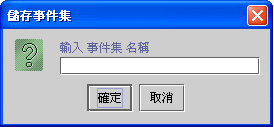

|
事件流程綱要設計平台 (event flow schema design framework) 事件設計平台操作 (event design framework) 事件屬性列示區 (event properties panel) 編輯、刪除、複製、拷貝、貼上事件 (edit, delete, duplicate, copy, paste event) 事件中斷與除錯 (event interrupt and debug)
事件流程綱要
(event flow schema)，提供設計師新增(create)、編輯(edit)、檢視
(view) 事件(event object)，分析 (analysis)、規劃 (route)、調整
(adjust)
事件流程 (event flow)，以及測試執行的事件中斷 (interrupt)
設定。設計師在視窗設計平台 (form design framework)
按下事件列表 (event table)
的新增事件按鈕，進入事件流程綱要設計平台，可以在工作區域中檢視所有運用於視窗的事件。工作區域以流程圖示所有事件物件
(event object)，其中較大的圖示 (icon) 事件集 (event set) 管理提供設計師儲存已設計完成的事件流程，設計師可以將常用的事件流程，像一般瀏覽器加入我的最愛的方式，儲存及管理事件集。事件集可以在任何專案中的視窗模組參用，設計師在參用時必須考慮在事件流程中所參用的資料來源及變數。
事件屬性列示區 (event properties panel)
新增一個事件有兩種方式，直接將滑鼠移到工作區域空白的地方，按下滑鼠右鍵，在出現的選單項目中選擇【新增事件】，或是按下工作列的圖示
新增
編輯、刪除、複製、拷貝、貼上事件 (edit, delete, duplicate, copy, paste event)
將滑鼠移到事件物件 (event object) 上，事件物件 (event object) 會以綠色外框標示 (mark) 為選取狀態(selected)，按下滑鼠右鍵，在出現的選單項目中選取【屬性】、【刪除】、【複製】、【拷貝】、【貼上】選單功能項目。 事件物件 (event object) 的位置，除了可以滑鼠按住事件物件的中心，拖拉至目標位置外，亦可以按住鍵盤的 Ctrl 加 ←↑↓→ 鍵，微調位置。設計師可以按住鍵盤的 Ctrl 後，以滑鼠 cascading 拖曳事件。 在選單項目中 拷貝、刪除、貼上含 cascading 的作業，是由所選事件加上其後續事件及否則事件所連結的所有事件，一併納入作業。例如：刪除 cascading，將會刪除所選事件外，加上其後續事件及否則事件的後續事件及否則事件•••。設計師可以選取事件物件 (event object) 後，按住鍵盤的 Ctrl ，再以滑鼠拖曳選取事件，其相關的 cascading 事件會一併移動。
在工作區域空白區域按下滑鼠右鍵，系統將會出現以下選單：
在選取的事件上按下滑鼠右鍵，系統將會出現以下選單：
設計師可以在工作區域中，將滑鼠移到事件物件
(event object) 上，事件物件 (event object) 會以綠色外框標示 (mark)
為選取狀態 (selected)，在綠色外框的右緣 (right margin)，按住
(pressed) 滑鼠，將後續事件 (next event)
的連結拖曳至目標事件，放開 (released) 滑鼠後，系統會以藍色線顯示連結。在綠色外框的下緣(bottom margin)，按住
(pressed) 滑鼠，將否則事件 (otherwise event)
的連結拖曳至目標事件，放開 (released)
滑鼠後，系統會以粉紅色線顯示連結。 在標示綠色外框的選取事件上，按下滑鼠右鍵，可以用選單項目的【移除後續事件】、【移除否則事件】，移除事件連結。或進入屬性設定頁，編輯否則事件 (otherwise event) 及後續事件 (next event)，重新連結事件流程 (route event flow)。
事件中斷與除錯 (event interrupt and debug)
jLIVE Builder™ 在設計模式下，提供事件執行的前後中斷機制，設計師在視窗設計平台上測試執行時，系統執行至中斷點，隨即顯示事件相關資訊及系統變數，設計師可更改測試的變數資料，以及選擇是否繼續執行、此中斷點是否繼續提供中斷服務、是否取消所有中斷服務。參閱 視窗除錯與事件中斷 (form debug and event interrupt)。事件中斷的設定只在設計模式下才有作用，且中斷設定在離開視窗設計後，即消除沒有存檔記錄。
事件集 (event set) 是以所選事件物件 (event object) 含以下 cascading 後續 (next) 及否則 (otherwise) 事件所組成。設計師可以將一完整程序的事件集儲存，而在其他任何專案中的視窗模組參用，參用時必須考慮在事件流程中所參用的資料來源及變數是否可運用於該視窗模組。
由操作選單【編輯】【事件集管理】的選單項目，開啟事件集管理視窗：
事件集的管理是與 Window 的檔案總管一樣的樹狀結構，設計師可以
在工作區域中所取事件，按右鍵選擇【儲存事件集】選單項目後，系統會顯示輸入事件集名稱的視窗 
輸入事件集名稱，系統會出現管理視窗，設計師可以選擇一目錄節點，或按
在工作區域中按滑鼠右鍵，選擇【由事件集貼上事件】選單項目。在選取事件集視窗中選擇一事件集貼上。系統將會檢查視窗中是否存在相同事件物件名稱，並自動以序號動態更動欲貼入的事件名稱，以維持系統事件物件名稱的唯一性。
Copyright © 2001~ 2004 Probe Technology . All Rights Reserved. Questions, comments, and suggestions to Service@probe.com.tw |